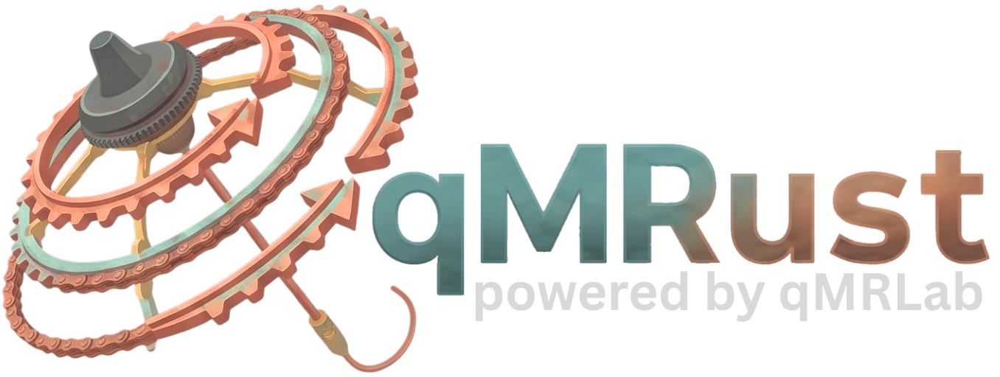

The WebAssembly build is not present. The viewers below still work — fitting needs the wasm package. Build it, then reload:
cd crates/qmrust-wasm && wasm-pack build --target web --out-dir ../../docs/playground/pkg
Scroll over the viewer to step frames.